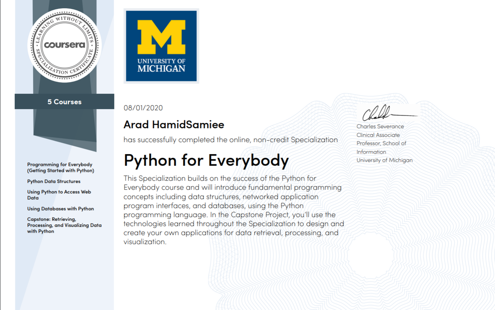

| Certificate Date | Title of Certificate | Verify Link | Platform | Institution | Instructor | Image |
| NOVEMBER 2020 | HONOR BADGE | your acclaim | Issued by Coursera | Authorized by The Linux Foundation | - | |
| OCTOBER 2020 | Joystick Health Check | itch.io | itch.io | - | Made By Arad HamidSamiee | |
| OCTOBER 2020 | Project R.O.O.M (Made in 2 days - single handedly) | LDjam icth.io | Ludum Dare | Ludum Dare | Made By Arad HamidSamiee | |
| SEPTEMBER 2020 | Computer Graphics With Modern OpenGL and C++ | press | Udemy | Udemy | Ben Cook | |
| AUGUST 2020 | ARTIFICIAL INTELLIGENCE SUMMER SCHOOL | press | IPM | IPM INSTITUTE FOR RESEARCH IN FUNDAMENTAL SCIENCES | Dr. Ali Ghazizadeh Dr. Hamid Soltanian-Zadeh Dr. Ali Meghdari Dr. Seyed Mahdi Khaligh Razavi Dr. Minoo Alemi Farrokh Karimi | |
| AUGUST 2020 | Python for Everybody SPECIALIZATION | press | Coursera | University of Michigan | Charles Russell Severance |  |
| AUGUST 2020 | Retrieving, Processing, and Visualizing Data with Python (WITH HONORS) | press | Coursera | University of Michigan | Charles Russell Severance | |
| AUGUST 2020 | Using Databases with Python | press | Coursera | University of Michigan | Charles Russell Severance | |
| JULY 2020 | Using Python to Access Web Data | press | Coursera | University of Michigan | Charles Russell Severance | |
| JULY 2020 | Python Data Structures | press | Coursera | University of Michigan | Charles Russell Severance | |
| JULY 2020 | Programming for Everybody (Getting Started with Python) | press | Coursera | University of Michigan | Charles Russell Severance | |
| JULY 2020 | Flutter & Dart - The Complete Guide | press | Udemy | Academind | Maximilian Schwarzmuller | |
| JULY 2020 | Network Hacking – Intermediate to Advanced |
Udemy zSecurity |
Udemy | zSecurity | Zaid Sabih | |
| JULY 2020 | Learn Python & Ethichal Hacking From Scratch |
Udemy zSecurity |
Udemy | zSecurity | Zaid Sabih | |
| JULY 2020 | Learn Ethichal Hacking From Scratch |
Udemy zSecurity |
Udemy | zSecurity | Zaid Sabih | |
| April 2020 | Open Source Software Development, Linux and Git SPECIALIZATION | press | Coursera | The Linux Foundation | Jerry Cooperstein | |
| April 2020 | Using Git for Distributed Development | press | Coursera | The Linux Foundation | Jerry Cooperstein | |
| April 2020 | Linux Tools for Developers | press | Coursera | The Linux Foundation | Jerry Cooperstein | |
| April 2020 | Linux for Developers | press | Coursera | The Linux Foundation | Jerry Cooperstein | |
| April 2020 | Open Source Software Development Methods | press | Coursera | The Linux Foundation | Jerry Cooperstein | |
| October 2019 | The Introduction to Quantum Computing | press | Coursera | Saint Petersburg State University | Сысоев Сергей Сергеевич |